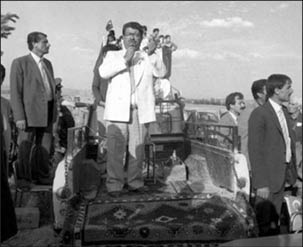

Mualece ve tevafuk

Tevfik Ertürk Arşivi
1983 genel seçimleri öncesi Anayasa oylaması vardı. [...] Kenan Evren Paşa 1982 Anayasası’nın arkasında olduğunu ilân etmiş ve “Ben Anayasa’ya kefilim” demişti. [...] Oyların yüzde 91.37’si Evet çıkınca, çeşitli iddialar ileri sürüldü. [...] “Kamuoyu” Kenan Evren’i aklamıştı; peki ya, “kamu vicdanı?”
Aynı Kenan Evren Paşa, bu kez 1983 seçimlerinden bir gün önce [...] ekrana çıkıp halktan Milliyetçi Demokrasi Partisi’ne (MDP); onun [...] bu göreve 12 Eylül darbecileri tarafından getirildiği bilinen lideri Turgut Sunalp’a destek vermesini istedi. [...] Hatta daha ileri giderek [...] Özal’a ve ANAP’a oy verilmemesini de.
Seçmenler, yüzde 91.37 ile akladığı darbeci paşanın, oylarına ve ülkenin geleceğine ipotek koymasına tahammül edememişti. Halk bir an bile tereddüt etmeksizin o yalancı (!) Turgut Özal ve partisini yüzde 45.14 oyla ve 400 kişilik Meclis’te 211 milletvekiliyle tek başına iktidara getirdi...
Ali Saydam, Algılama Yönetimi, (2012)